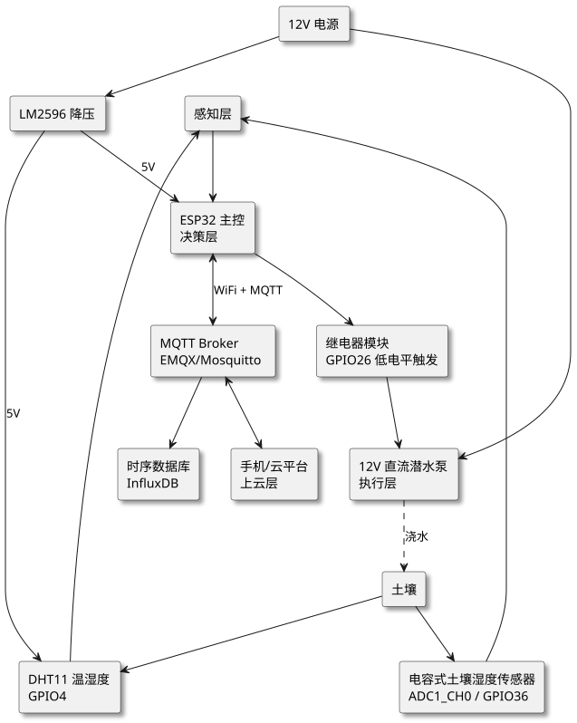
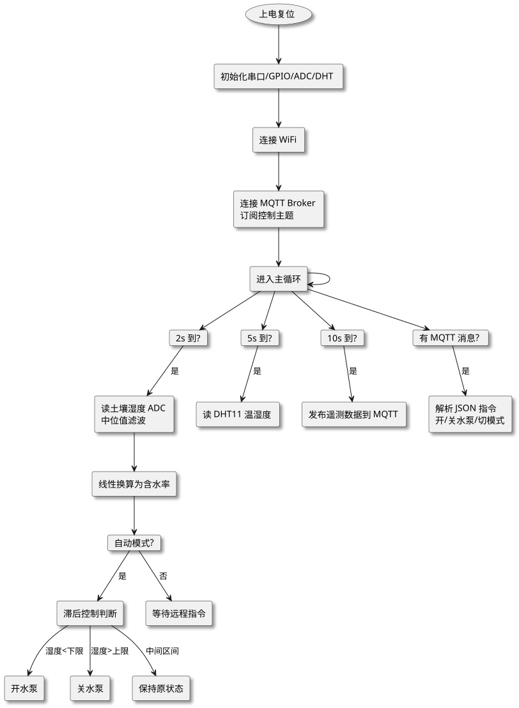
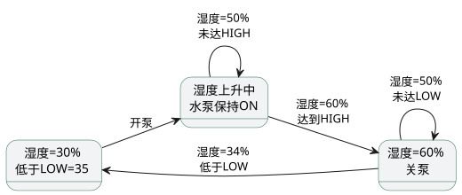

第 37 章 智慧农业灌溉系统（ESP32+MQTT）
学习目标
- 掌握基于 ESP32 + MQTT 的物联网项目需求分析方法与系统架构设计
- 学会使用电容式土壤湿度传感器与 ADC 进行土壤含水率测量与标定
- 掌握继电器驱动水泵的双阈值滞后控制（Hysteresis）策略
- 学会使用 PubSubClient 库实现 MQTT 订阅控制与遥测数据上报
- 能独立完成智慧农业灌溉系统的硬件接线、程序编写、调试与扩展
§37.1 项目需求分析
智慧农业是物联网技术在农业领域的重要落地场景，其中自动灌溉是最经典也是最实用的入门级农业物联网项目。本项目以 ESP32 作为边缘控制器，结合电容式土壤湿度传感器、DHT11 温湿度传感器、继电器与直流潜水泵，构建一套可本地自动控制、可远程手动干预、可上报数据到云平台的智慧农业灌溉系统。
§37.1.1 功能需求
具体功能需求如下：
- 土壤湿度采集：通过电容式土壤湿度传感器实时采集土壤含水率，采集周期 2 秒，分辨率优于 1%。
- 空气温湿度采集：通过 DHT11 采集空气温度与相对湿度，采集周期 5 秒，用于辅助判断蒸发量。
- 自动灌溉控制：自动模式下，土壤湿度低于下限阈值（默认 35%）自动开启水泵；达到上限阈值（默认 60%）自动关闭水泵，避免频繁启停。
- 手动远程控制：通过 MQTT 订阅控制主题，可在云平台或手机端强制开/关水泵，优先级高于自动逻辑。
- 数据上云：每 10 秒通过 MQTT 发布土壤湿度、温度、湿度、水泵状态到云平台 Broker。
- 状态指示：板载 LED 指示 WiFi/MQTT 连接状态，外接 LED 指示水泵运行状态。
- 断网容错：WiFi 或 MQTT 断开时，自动模式仍可正常工作，保证作物不被旱死或淹死。
§37.1.2 农业灌溉指标
设计灌溉系统必须了解基本农业指标，否则代码再漂亮也无法服务于真实农业生产。下表给出常见作物适宜的土壤含水率范围（占田间持水量的百分比）：
| 作物类型 | 适宜土壤含水率（%） | 灌溉下限（%） | 灌溉上限（%） |
|---|---|---|---|
| 叶菜类（生菜、菠菜） | 60~80 | 45 | 75 |
| 茄果类（番茄、辣椒） | 55~75 | 40 | 70 |
| 根茎类（萝卜、胡萝卜） | 50~70 | 40 | 65 |
| 粮食作物（小麦、玉米） | 45~65 | 35 | 60 |
| 多肉/花卉 | 30~50 | 25 | 45 |
本项目默认下限 35%、上限 60% 适用于粮食作物与一般蔬菜；实际部署时应根据作物种类、土壤类型（砂土持水量低、黏土持水量高）、生育期（苗期需水少、开花结果期需水多）调整阈值。
§37.1.3 应用场景
- 家庭阳台花园：盆栽蔬菜与花卉自动浇水，出差时无人值守。
- 小型温室大棚：单节点控制一畦地，多节点 MQTT 组网实现整棚联动。
- 校园教学农场：作为物联网教学演示项目，学生通过手机即可观察数据与控制设备。
- 城市屋顶绿化：远程监控屋顶花园土壤状态，避免干旱导致植物枯死。
§37.2 系统架构设计
系统采用典型的"感知—决策—执行—上云"四层物联网架构。感知层由土壤湿度传感器和 DHT11 组成；决策层由 ESP32 主控承担，运行自动控制逻辑；执行层由继电器驱动 12V 水泵；上云层通过 WiFi + MQTT 协议与云平台 Broker 双向通信。

查看 PlantUML 源码
@startuml
skinparam defaultFontName "Microsoft YaHei"
skinparam backgroundColor #ffffff
skinparam componentStyle rectangle
skinparam shadowing true
top to bottom direction
component "感知层" as SUB
component "ESP32 主控\n决策层" as MCU
component "继电器模块\nGPIO26 低电平触发" as RELAY
component "12V 直流潜水泵\n执行层" as PUMP
component "土壤" as SOIL
component "电容式土壤湿度传感器\nADC1_CH0 / GPIO36" as SM
component "DHT11 温湿度\nGPIO4" as DHT
component "MQTT Broker\nEMQX/Mosquitto" as BR
component "手机/云平台\n上云层" as APP
component "时序数据库\nInfluxDB" as DB
component "12V 电源" as PWR12
component "LM2596 降压" as BUCK
SUB --> MCU
MCU --> RELAY
RELAY --> PUMP
PUMP ..> SOIL : 浇水
SOIL --> SM
SOIL --> DHT
SM --> SUB
DHT --> SUB
MCU <--> BR : WiFi + MQTT
BR <--> APP
BR --> DB
PWR12 --> PUMP
PWR12 --> BUCK
BUCK --> MCU : 5V
BUCK --> DHT : 5V
@enduml架构设计要点：
- 电源隔离：12V 电源专供水泵，经 LM2596 降压到 5V 供 ESP32 与传感器，避免水泵启停时冲击 MCU。
- 继电器隔离：继电器将 12V 强电与 ESP32 3.3V 弱电完全隔离，保护 GPIO。
- 双向上云：MQTT 既上报遥测数据，又订阅控制指令，实现闭环远程控制。
- 断网容错：自动控制逻辑完全在 ESP32 本地执行，不依赖云端，网络中断仍可正常灌溉。
§37.3 硬件设计
本系统硬件较为精简，核心是 ESP32 主控 + 电容式土壤湿度传感器 + DHT11 + 继电器 + 水泵 + 电源模块。下面分别给出 BOM 与接线表。
§37.3.1 BOM 物料清单
| 编号 | 元件 | 规格 | 数量 | 参考单价（¥） | 说明 |
|---|---|---|---|---|---|
| 1 | ESP32 开发板 | ESP32-DevKitC V4 / NodeMCU-32S | 1 | 25 | 双核 240MHz，内置 WiFi/BLE |
| 2 | 电容式土壤湿度传感器 | v1.2 模拟输出 | 1 | 8 | 抗腐蚀，优于电阻式 |
| 3 | DHT11 温湿度传感器 | 单总线，0~50℃ | 1 | 5 | 空气温湿度采集 |
| 4 | 继电器模块 | 1 路 5V 光耦隔离，低电平触发 | 1 | 4 | 驱动 12V 水泵 |
| 5 | 直流微型潜水泵 | 12V，扬程 1~1.5m，流量 1~2L/min | 1 | 15 | 浸入式安装 |
| 6 | 12V 电源适配器 | 12V/2A DC5.5 插头 | 1 | 20 | 水泵主电源 |
| 7 | LM2596 降压模块 | 输入 12V，输出 5V/3A | 1 | 6 | 给 ESP32 与传感器供电 |
| 8 | 硅胶水管 | 内径 6mm / 外径 8mm | 1m | 3 | 输送灌溉水 |
| 9 | 杜邦线 + 面包板 | — | 若干 | 5 | 原型搭建 |
| 10 | LED + 1kΩ 电阻 | 5mm 红色 | 1 | 0.5 | 水泵运行指示 |
§37.3.2 接线表
| 模块引脚 | ESP32 引脚 | 说明 |
|---|---|---|
| 土壤湿度传感器 VCC | 3V3 | 必须 3.3V，避免烧毁 ADC |
| 土壤湿度传感器 GND | GND | 共地 |
| 土壤湿度传感器 AOUT | GPIO36（ADC1_CH0） | 模拟输出 0~3V |
| DHT11 VCC | 3V3 | 3.3V 供电 |
| DHT11 DATA | GPIO4 | 单总线数据，需 4.7kΩ 上拉 |
| DHT11 GND | GND | 共地 |
| 继电器 VCC | 5V（VIN 引脚） | 需 5V 供电，3.3V 可能驱动不可靠 |
| 继电器 IN | GPIO26 | 低电平触发，水泵启动 |
| 继电器 GND | GND | 共地 |
| 继电器 COM | 12V 电源正极 | 公共端 |
| 继电器 NO | 水泵正极 | 常开端，得电闭合 |
| 水泵负极 | 12V 电源负极 | — |
| LM2596 输入 + | 12V 电源正极 | — |
| LM2596 输入 − | 12V 电源负极 | — |
| LM2596 输出 + | ESP32 VIN（5V） | 5V 给 ESP32 供电 |
| LM2596 输出 − | ESP32 GND | 共地 |
| 水泵指示 LED 正极 | GPIO27 | 经 1kΩ 限流 |
| 板载 LED | GPIO2 | WiFi/MQTT 状态 |
digitalWrite(PIN_RELAY, LOW) 启动水泵。若使用高电平触发型继电器，所有控制逻辑需要取反，否则水泵会"上电即抽水"。采购时务必向商家确认触发电平，并在代码 setup() 中明确初始化为非触发电平，避免上电瞬间水泵误启动导致溢水。
§37.4 土壤湿度标定与 ADC 处理
电容式土壤湿度传感器的输出电压与土壤含水率并非线性关系，且不同传感器个体之间存在差异，因此必须进行干湿两点标定才能获得可靠的含水率读数。本节介绍 ESP32 ADC 原理与标定方法。
§37.4.1 ESP32 ADC 原理
ESP32 内置两个 12 位逐次逼近型 ADC（ADC1 与 ADC2），共 18 个通道。ADC1 共 8 个通道（GPIO32~39），可在 WiFi 工作时正常使用；ADC2 共 10 个通道，但 WiFi 启用后部分通道被占用。本项目选择 ADC1_CH0（GPIO36），保证 WiFi 联网时仍可稳定读取。
ESP32 ADC 主要参数：
- 分辨率：12 位，量程 0~4095
- 参考电压：约 1.1V 内部参考，经衰减器后可测量 0~3.3V（不同衰减档位对应不同满量程）
- 衰减档位：0dB（≤0.8V）/ 2.5dB（≤1.1V）/ 6dB（≤1.5V）/ 11dB（≤3.3V，默认推荐）
- 非线性：ESP32 ADC 在量程两端非线性较明显，建议使用
esp_adc_cal库进行出厂校准补偿
§37.4.2 干湿两点标定方法
电容式土壤湿度传感器在干燥空气中输出电压最高（约 3.0V，ADC 值约 3700），浸入水中输出电压最低（约 1.4V，ADC 值约 1750），即电压越高湿度越低。标定步骤如下：
- 干燥点采集：将传感器擦干净，悬空放置于空气中静置 1 分钟，记录 ADC 平均读数
ADC_DRY（约 3700）。 - 湿润点采集：将传感器插入浸透蒸馏水的纸巾或一杯水中静置 1 分钟，记录 ADC 平均读数
ADC_WET（约 1750）。 - 计算湿度：使用线性映射公式计算含水率：
moisture(%) = (ADC_DRY - ADC) / (ADC_DRY - ADC_WET) × 100 - 范围钳制：将结果限制在 0~100% 之间，避免 ADC 噪声导致越界。
§37.4.3 电压-湿度转换公式表
假设标定后 ADC_DRY = 3700、ADC_WET = 1750，则电压、ADC 值与含水率的对应关系如下表：
| 状态 | 电压 (V) | ADC 原始值 | 含水率 (%) | 说明 |
|---|---|---|---|---|
| 完全干燥（空气中） | 3.00 | 3700 | 0 | 标定点 ADC_DRY |
| 极干土壤 | 2.70 | 3300 | 21 | 需立即灌溉 |
| 较干土壤 | 2.30 | 2820 | 46 | 接近下限阈值 |
| 适宜土壤 | 2.00 | 2450 | 64 | 作物生长最佳区间 |
| 湿润土壤 | 1.70 | 2080 | 83 | 停止灌溉 |
| 浸没水中 | 1.42 | 1750 | 100 | 标定点 ADC_WET |
由公式 moisture(%) = (3700 - ADC) / (3700 - 1750) × 100 = (3700 - ADC) / 19.5 可见，ADC 值每变化约 20，含水率变化约 1%。在实际工程中，应多次采样取平均（如 10 次中位值滤波）以抑制 ADC 抖动。
§37.5 软件架构与关键代码
§37.5.1 软件流程图
ESP32 主循环采用"非阻塞定时调度"模式，避免使用 delay() 阻塞影响 MQTT 心跳。系统划分为三个独立任务：2 秒采集土壤湿度并执行自动控制、5 秒采集 DHT11、10 秒上报 MQTT 数据。MQTT 回调函数处理远程控制指令。

查看 PlantUML 源码
@startuml
skinparam defaultFontName "Microsoft YaHei"
skinparam backgroundColor #ffffff
skinparam componentStyle rectangle
skinparam shadowing true
top to bottom direction
usecase "上电复位" as START
component "初始化串口/GPIO/ADC/DHT" as INIT
component "连接 WiFi" as WIFI
component "连接 MQTT Broker\n订阅控制主题" as MQTT
component "进入主循环" as LOOP
card "2s 到?" as T1
component "读土壤湿度 ADC\n中位值滤波" as READ
component "线性换算为含水率" as CALC
card "自动模式?" as CTRL
component "滞后控制判断" as HYST
component "开水泵" as ON
component "关水泵" as OFF
component "保持原状态" as KEEP
component "等待远程指令" as WAIT
card "5s 到?" as T2
component "读 DHT11 温湿度" as DHT11
card "10s 到?" as T3
component "发布遥测数据到 MQTT" as PUB
card "有 MQTT 消息?" as CB
component "解析 JSON 指令\n开/关水泵/切模式" as PARSE
START --> INIT
INIT --> WIFI
WIFI --> MQTT
MQTT --> LOOP
LOOP --> T1
T1 --> READ : 是
READ --> CALC
CALC --> CTRL
CTRL --> HYST : 是
HYST --> ON : 湿度<下限
HYST --> OFF : 湿度>上限
HYST --> KEEP : 中间区间
CTRL --> WAIT : 否
LOOP --> T2
T2 --> DHT11 : 是
LOOP --> T3
T3 --> PUB : 是
LOOP --> CB
CB --> PARSE : 是
LOOP --> LOOP
@enduml§37.5.2 完整 Arduino C++ 代码
下面给出可烧录运行的完整 Arduino 代码。开发环境为 Arduino IDE 2.x，需在库管理器中安装 PubSubClient、DHT sensor library、ArduinoJson 三个库。开发板选择 "ESP32 Dev Module"，上传波特率 921600。
/* =====================================================================
* 智慧农业灌溉系统 ESP32 + MQTT
* 文件: smart_irrigation.ino
* 功能: 土壤湿度自动控制 + MQTT 远程控制 + 数据上报
* 依赖: PubSubClient / DHT sensor library / ArduinoJson
* ===================================================================== */
#include <WiFi.h>
#include <PubSubClient.h>
#include <DHT.h>
#include <ArduinoJson.h>
/* ============ 引脚定义 ============ */
#define PIN_SOIL 36 /* ADC1_CH0 电容式土壤湿度 */
#define PIN_DHT 4 /* DHT11 数据脚 */
#define PIN_RELAY 26 /* 继电器控制脚，低电平触发 */
#define PIN_PUMP_LED 27 /* 水泵运行指示灯 */
#define PIN_WIFI_LED 2 /* 板载 LED，指示联网状态 */
/* ============ 传感器与器件参数 ============ */
#define DHT_TYPE DHT11
DHT dht(PIN_DHT, DHT_TYPE);
/* ============ WiFi 配置 ============ */
const char* WIFI_SSID = "Your-SSID";
const char* WIFI_PASSWORD = "Your-PASSWORD";
/* ============ MQTT 配置 ============ */
const char* MQTT_BROKER = "broker.emqx.io";
const int MQTT_PORT = 1883;
const char* MQTT_CLIENT = "esp32-irrig-001";
const char* TOPIC_PUB = "farm/irrig/001/telemetry"; /* 上报遥测 */
const char* TOPIC_SUB = "farm/irrig/001/command"; /* 订阅控制 */
const char* TOPIC_STATUS = "farm/irrig/001/status"; /* 在线状态 */
/* ============ 灌溉控制参数（可由云端修改） ============ */
float MOIST_LOW = 35.0; /* 自动模式开泵下限 (%) */
float MOIST_HIGH = 60.0; /* 自动模式关泵上限 (%) */
bool autoMode = true; /* true=自动, false=手动 */
bool pumpForceOn = false; /* 手动模式下强制开泵 */
/* ============ 土壤湿度标定值（实际部署前必须重新标定） ============ */
const int ADC_DRY = 3700; /* 干空气中 ADC 读数 */
const int ADC_WET = 1750; /* 浸水中 ADC 读数 */
/* ============ 任务调度参数 ============ */
const unsigned long INTERVAL_SOIL = 2000UL; /* 2 秒采集土壤 */
const unsigned long INTERVAL_DHT = 5000UL; /* 5 秒采集 DHT11 */
const unsigned long INTERVAL_PUB = 10000UL; /* 10 秒上报 MQTT */
unsigned long lastSoil = 0, lastDHT = 0, lastPub = 0;
/* ============ 状态变量 ============ */
bool pumpState = false; /* 水泵当前开关状态 */
float soilMoisture = 0.0; /* 土壤含水率 (%) */
float airTemp = 0.0; /* 空气温度 (℃) */
float airHumid = 0.0; /* 空气相对湿度 (%) */
/* ============ WiFi 与 MQTT 客户端 ============ */
WiFiClient espClient;
PubSubClient client(espClient);
/* ---------- 中位值滤波：采集 N 次取中位数，抑制脉冲噪声 ---------- */
int readAdcMedian(int pin, int n) {
int buf[16];
if (n > 16) n = 16;
for (int i = 0; i < n; i++) {
buf[i] = analogRead(pin);
delay(2);
}
/* 冒泡排序 */
for (int i = 0; i < n - 1; i++)
for (int j = i + 1; j < n; j++)
if (buf[i] > buf[j]) { int t = buf[i]; buf[i] = buf[j]; buf[j] = t; }
return buf[n / 2];
}
/* ---------- 读取土壤湿度并换算为含水率 (%) ---------- */
float readSoilMoisture(void) {
int adc = readAdcMedian(PIN_SOIL, 10);
float moisture = (float)(ADC_DRY - adc) / (ADC_DRY - ADC_WET) * 100.0;
if (moisture < 0.0) moisture = 0.0;
if (moisture > 100.0) moisture = 100.0;
return moisture;
}
/* ---------- 控制水泵（统一入口，确保状态同步） ---------- */
void setPump(bool on) {
if (on == pumpState) return; /* 状态未变，直接返回 */
pumpState = on;
/* 低电平触发继电器：开泵=LOW，关泵=HIGH */
digitalWrite(PIN_RELAY, on ? LOW : HIGH);
digitalWrite(PIN_PUMP_LED, on ? HIGH : LOW);
Serial.printf("[PUMP] %s\n", on ? "ON" : "OFF");
/* 状态变化立即上报，便于云端实时显示 */
publishData(true);
}
/* ---------- 自动模式滞后控制（Hysteresis） ---------- */
void controlPump(float moisture) {
if (!autoMode) {
/* 手动模式：遵循 pumpForceOn */
setPump(pumpForceOn);
return;
}
/* 自动模式：双阈值滞后控制 */
if (moisture < MOIST_LOW) {
setPump(true); /* 低于下限，立即开泵 */
} else if (moisture >= MOIST_HIGH) {
setPump(false); /* 达到上限，立即关泵 */
}
/* 介于 LOW 与 HIGH 之间时保持原状态，避免频繁启停 */
}
/* ---------- MQTT 回调：处理云端下发的控制指令 ---------- */
void mqttCallback(char* topic, byte* payload, unsigned int length) {
StaticJsonDocument<256> doc;
DeserializationError err = deserializeJson(doc, payload, length);
if (err) {
Serial.print(F("[MQTT] JSON 解析失败: "));
Serial.println(err.c_str());
return;
}
const char* cmd = doc["cmd"] | "";
Serial.printf("[MQTT] 收到指令: %s\n", cmd);
if (strcmp(cmd, "pump_on") == 0) {
autoMode = false; pumpForceOn = true; setPump(true);
} else if (strcmp(cmd, "pump_off") == 0) {
autoMode = false; pumpForceOn = false; setPump(false);
} else if (strcmp(cmd, "auto") == 0) {
autoMode = true; pumpForceOn = false;
} else if (strcmp(cmd, "set_thresh") == 0) {
if (doc.containsKey("low")) MOIST_LOW = doc["low"];
if (doc.containsKey("high")) MOIST_HIGH = doc["high"];
Serial.printf("[CFG] low=%.1f high=%.1f\n", MOIST_LOW, MOIST_HIGH);
} else {
Serial.println(F("[MQTT] 未知指令"));
}
publishData(true); /* 立即上报最新状态 */
}
/* ---------- 上报遥测数据到 MQTT ---------- */
void publishData(bool force) {
if (!client.connected() && !force) return;
StaticJsonDocument<256> doc;
doc["moisture"] = round(soilMoisture * 10) / 10.0;
doc["temp"] = round(airTemp * 10) / 10.0;
doc["humidity"] = round(airHumid * 10) / 10.0;
doc["pump"] = pumpState ? 1 : 0;
doc["auto"] = autoMode ? 1 : 0;
doc["low"] = MOIST_LOW;
doc["high"] = MOIST_HIGH;
doc["uptime"] = millis() / 1000;
char buffer[256];
size_t n = serializeJson(doc, buffer);
client.publish(TOPIC_PUB, buffer, n);
}
/* ---------- 重连 MQTT ---------- */
void reconnectMQTT() {
while (!client.connected()) {
Serial.print(F("[MQTT] 连接中... "));
if (client.connect(MQTT_CLIENT)) {
Serial.println(F("成功"));
client.subscribe(TOPIC_SUB);
client.publish(TOPIC_STATUS, "online");
} else {
Serial.print(F("失败 rc="));
Serial.print(client.state());
Serial.println(F(" 5 秒后重试"));
digitalWrite(PIN_WIFI_LED, LOW);
delay(5000);
}
}
digitalWrite(PIN_WIFI_LED, HIGH);
}
/* ---------- WiFi 连接 ---------- */
void setupWiFi() {
delay(10);
Serial.printf("[WiFi] 连接 %s\n", WIFI_SSID);
WiFi.mode(WIFI_STA);
WiFi.begin(WIFI_SSID, WIFI_PASSWORD);
while (WiFi.status() != WL_CONNECTED) {
delay(500);
Serial.print(".");
}
Serial.printf("\n[WiFi] 已连接 IP=%s\n", WiFi.localIP().toString().c_str());
}
/* ============ setup ============ */
void setup() {
Serial.begin(115200);
delay(200);
Serial.println(F("\n==== 智慧农业灌溉系统启动 ===="));
pinMode(PIN_RELAY, OUTPUT);
pinMode(PIN_PUMP_LED, OUTPUT);
pinMode(PIN_WIFI_LED, OUTPUT);
/* 上电默认关泵（低电平触发继电器，初始为 HIGH = 关） */
digitalWrite(PIN_RELAY, HIGH);
digitalWrite(PIN_PUMP_LED, LOW);
digitalWrite(PIN_WIFI_LED, LOW);
/* 12 位 ADC + 11dB 衰减，可测 0~3.3V */
analogReadResolution(12);
analogSetAttenuation(ADC_11db);
dht.begin();
setupWiFi();
client.setServer(MQTT_BROKER, MQTT_PORT);
client.setCallback(mqttCallback);
client.setBufferSize(512);
/* 首次采集，避免首条上报数据为 0 */
soilMoisture = readSoilMoisture();
airTemp = dht.readTemperature();
airHumid = dht.readHumidity();
if (isnan(airTemp)) airTemp = 0.0;
if (isnan(airHumid)) airHumid = 0.0;
}
/* ============ loop ============ */
void loop() {
unsigned long now = millis();
/* 任务 1：每 2 秒采集土壤湿度并自动控制 */
if (now - lastSoil >= INTERVAL_SOIL) {
lastSoil = now;
soilMoisture = readSoilMoisture();
Serial.printf("[SOIL] moisture = %.1f%%\n", soilMoisture);
controlPump(soilMoisture);
}
/* 任务 2：每 5 秒采集 DHT11 */
if (now - lastDHT >= INTERVAL_DHT) {
lastDHT = now;
float t = dht.readTemperature();
float h = dht.readHumidity();
if (!isnan(t)) airTemp = t;
if (!isnan(h)) airHumid = h;
Serial.printf("[DHT] T=%.1f℃ H=%.1f%%\n", airTemp, airHumid);
}
/* 任务 3：每 10 秒上报 MQTT */
if (now - lastPub >= INTERVAL_PUB) {
lastPub = now;
publishData(false);
}
/* 维护 MQTT 连接（断网容错） */
if (!client.connected()) {
digitalWrite(PIN_WIFI_LED, LOW);
if (WiFi.status() == WL_CONNECTED) reconnectMQTT();
} else {
client.loop();
}
/* 短延时，让出 CPU */
delay(10);
}
§37.5.3 滞后控制（Hysteresis）策略
§37.5.3.1 单阈值问题与双阈值方案
滞后控制是工业控制中避免执行机构频繁启停的经典策略。在本项目中，若仅设置单阈值（如低于 50% 开泵、高于 50% 关泵），当土壤湿度在 50% 附近波动时，水泵会反复启停，既损坏继电器寿命又造成水资源浪费。
滞后控制设置两个阈值：下限 LOW=35%（开泵） 与 上限 HIGH=60%（关泵），二者之间形成 25% 的"死区"。湿度从下限升至上限期间水泵保持开启，从上限降至下限期间水泵保持关闭，仅在越过阈值时才切换状态。继电器动作次数大幅减少，水泵寿命可延长 5~10 倍。
§37.5.3.2 状态迁移分析

查看 PlantUML 源码
@startuml
skinparam defaultFontName "Microsoft YaHei"
skinparam backgroundColor #ffffff
skinparam state {
BackgroundColor #f1f3f5
BorderColor #2d6a4f
}
left to right direction
state "湿度=30%\n低于LOW=35" as A
state "湿度上升中\n水泵保持ON" as B
state "湿度=60%\n关泵" as C
A --> B : 开泵
B --> B : 湿度=50%\n未达HIGH
B --> C : 湿度=60%\n达到HIGH
C --> C : 湿度=50%\n未达LOW
C --> A : 湿度=34%\n低于LOW
@enduml§37.5.3.3 死区宽度调优
滞后控制的死区宽度（HIGH − LOW）需根据实际情况调整：
- 死区过窄（如 5%）：抑制频繁启停效果差，与单阈值差别不大。
- 死区过宽（如 50%）：响应迟钝，可能造成作物长时间缺水或过量灌溉。
- 经验值：死区宽度取 15~30% 较为合适，本项目取 25%。
§37.6 完整工程结构与调试
§37.6.1 工程目录结构
§37.6.1.1 目录组织
完整工程位于 /code/esp32/37-smart-irrigation/，目录结构如下：
37-smart-irrigation/
├── smart_irrigation.ino # 主程序（本章代码）
├── config.h # WiFi/MQTT/阈值参数配置头文件
├── README.md # 烧录与运行说明
├── data/
│ ├── calibration.csv # 干湿标定原始数据
│ └── mqtt-test.json # 控制指令示例
├── docs/
│ ├── schematic.png # 接线原理图
│ └── photos/ # 实物照片
└── tools/
└── mqtt-sim.py # Python MQTT 测试脚本
§37.6.1.2 配置文件管理
其中 config.h 集中管理所有可配置参数，便于不同环境部署：
#ifndef CONFIG_H
#define CONFIG_H
#define WIFI_SSID "Your-SSID"
#define WIFI_PASSWORD "Your-PASSWORD"
#define MQTT_BROKER "broker.emqx.io"
#define MQTT_PORT 1883
#define ADC_DRY 3700
#define ADC_WET 1750
#define MOIST_LOW 35.0
#define MOIST_HIGH 60.0
#endif
§37.6.2 灌溉系统调试
调试遵循"由简到繁、分模块验证"原则：
- 电源调试：先不接 ESP32，单独给 LM2596 供电 12V，调节电位器使输出为 5.0V（用万用表确认），再接入 ESP32。
- ADC 标定：上传一个最简程序只打印
analogRead(36)，分别在空气中和水中读取并记录 ADC_DRY / ADC_WET，回填到config.h。 - 继电器调试：写一段测试代码交替拉低/拉高 GPIO26，确认继电器吸合声与水泵启停正常。
- DHT11 调试：单独运行 DHT 库示例，确认温湿度读数合理（手握住传感器湿度应上升）。
- WiFi 联网：在串口看到 IP 地址即表示联网成功；若失败检查 SSID/密码是否正确、2.4G/5G 是否选错（ESP32 仅支持 2.4G）。
- MQTT 通信：使用 MQTTX 或 mosquitto_sub 订阅
farm/irrig/001/telemetry，确认每 10 秒收到 JSON 数据。 - 远程控制：使用 mosquitto_pub 向
farm/irrig/001/command发布{"cmd":"pump_on"}，确认水泵启动。 - 自动控制：发布
{"cmd":"auto"}切换到自动模式，将传感器从水中取出观察湿度下降，低于 35% 时水泵应自动启动；重新插入水中湿度升至 60% 时自动关泵。
§37.6.3 防漏液与防护
灌溉系统涉及水与电并存，防护至关重要：
- 传感器防腐：电容式土壤湿度传感器金属探针应选镀金或防腐涂层版本，长期插入土壤寿命约 6~12 个月。
- 接线防水：所有连接点用热缩管密封，传感器引线与 ESP32 接口处涂 704 硅胶防潮。
- 水泵防护：潜水泵进水口加滤网防止泥沙堵塞；出水口安装止回阀防止水倒流。
- 主控防溅：ESP32 与继电器模块放入防水接线盒，仅传感器探头与水管引出。
- 缺水保护：水箱底部加装水位开关，水泵空转会烧毁，建议在水泵电源回路串联干簧管水位传感器。
- 接地：12V 电源、ESP32、传感器必须共地，否则 ADC 读数会乱跳。
§37.7 扩展方向
§37.7.1 多区控制
实际温室往往有多畦地需要分别灌溉。扩展方案：每畦地配置一套传感器 + 电磁阀（替代继电器+水泵），共用一台主水泵与 ESP32。ESP32 通过 GPIO 扩展芯片（如 PCF8574）控制多个电磁阀，按"轮灌"策略依次浇水，避免多畦同时开启导致水压不足。MQTT 主题升级为 farm/zone/{id}/telemetry，云平台按区显示数据。
§37.7.2 气象联动
接入中国气象局 API 或和风天气 API，获取未来 24 小时降雨预报。若预报有大雨，则即便当前土壤湿度低于阈值也暂缓灌溉，避免"刚浇完就下雨"造成涝害。该策略可节约用水 20~40%，是智慧农业与凭经验灌溉的核心区别。
§37.7.3 机器学习预测灌溉
将历史土壤湿度、温度、湿度、光照数据上传到云端时序数据库（如 InfluxDB），使用 LSTM 或随机森林训练预测模型，提前 1~2 小时预测土壤湿度变化趋势，在到达下限之前预先灌溉，使湿度曲线更平稳。该方向适合作为本科毕业设计或研究生课题。
§37.7.4 LoRa 远距离组网
ESP32 内置 WiFi 仅适合有 WiFi 覆盖的温室场景。对大田、果园等开阔场景，可用 LoRa 模块（如 SX1278）替代 WiFi，组建星型网络，单一网关可覆盖半径 2~5 公里，节点采用电池 + 太阳能供电，实现真正意义上的"广域农业物联网"。
§37.7.5 边缘 AI 与 TinyML
在 ESP32 上部署轻量化神经网络（TensorFlow Lite for Microcontrollers），根据多日历史数据学习作物水分吸收规律，实现自适应阈值调整。例如在作物开花结果期自动提高上限阈值，苗期自动降低，无需人工配置。
本章小结
- 智慧农业灌溉是物联网技术在农业领域的典型应用，需求分析应紧扣"自动控制 + 远程干预 + 数据上云"三要素。
- 系统架构采用"感知—决策—执行—上云"四层模型，电源隔离与继电器隔离是保证可靠性的关键。
- 电容式土壤湿度传感器必须进行干湿两点标定，ESP32 ADC1_CH0 可在 WiFi 工作时正常使用，ADC2 不可用。
- 双阈值滞后控制（Hysteresis）是避免执行机构频繁启停的经典策略，死区宽度取 15~30% 较为合适。
- MQTT 协议采用 PubSubClient 库实现订阅控制与遥测上报，断网时本地自动控制仍可工作，保证系统容错性。
- 非阻塞定时调度（millis 判断）替代 delay() 是嵌入式系统多任务处理的标配写法，保证 MQTT 心跳不中断。
- 实际工程需重视防护（防水、防腐、防漏液、缺水保护），并预留多区控制、气象联动、机器学习预测等扩展接口。
思考题与习题
- 本项目中土壤湿度传感器为何选用电容式而非电阻式？请从原理、寿命、抗腐蚀三个角度分析。
- 若将本项目部署到一畦种番茄的温室（适宜湿度 55~75%），应如何修改
config.h中的阈值？死区宽度是否需要调整？ - 编写一段 Python 脚本，使用
paho-mqtt库订阅farm/irrig/001/telemetry主题，将收到的 JSON 数据写入 CSV 文件，便于后续数据分析。 - 滞后控制（Hysteresis）相比单阈值控制有哪些优势？若死区设为 0 会发生什么？若死区设为 80% 又会怎样？
- 若 ESP32 在 WiFi 联网失败时进入无限
delay(5000)重试，会导致什么后果？如何用非阻塞方式重写重连逻辑？ - 设计一个"缺水保护"功能：在水箱底部加装一个干簧管水位传感器接 GPIO 25，当水箱无水时禁止水泵启动并通过 MQTT 报警。给出代码思路与接线修改方案。
参考文献
- Espressif Systems. ESP32 Datasheet (v3.9) [Z]. 2024. https://www.espressif.com/sites/default/files/documentation/esp32_datasheet_en.pdf
- Espressif Systems. ESP32 ADC 校准 API 参考 [Z]. 2024. https://docs.espressif.com/projects/esp-idf/zh_CN/latest/esp32/api-reference/peripherals/adc-calibration.html
- Nicholas O'Leary. PubSubClient: MQTT Client Library for Arduino [Z]. 2024. https://pubsubclient.knolleary.net/
- OASIS. MQTT Version 5.0 Specification [S]. 2019. https://docs.oasis-open.org/mqtt/mqtt/v5.0/mqtt-v5.0.html
- 张毅刚. 单片机原理及应用——C51 编程 + Proteus 仿真（第 4 版）[M]. 北京：高等教育出版社, 2021.
- 李道亮, 李振烈. 智慧农业物联网技术与应用 [M]. 北京：中国农业出版社, 2022.
- GB/T 30268.1—2017. 物联网农业应用术语 第 1 部分：基础术语 [S]. 北京：中国标准出版社, 2017.
- Li D, Wang H, Khosla R. A Cloud-Based IoT Architecture for Smart Irrigation in Precision Agriculture [J]. IEEE Internet of Things Journal, 2021, 8(15): 12218-12229.
- Muñoz-Carpena R, Dukes M D. Automatic Irrigation Based on Soil Moisture Sensors: Principles and Practices [J]. Agricultural Engineering International: CIGR Journal, 2020, 22(3): 1-12.